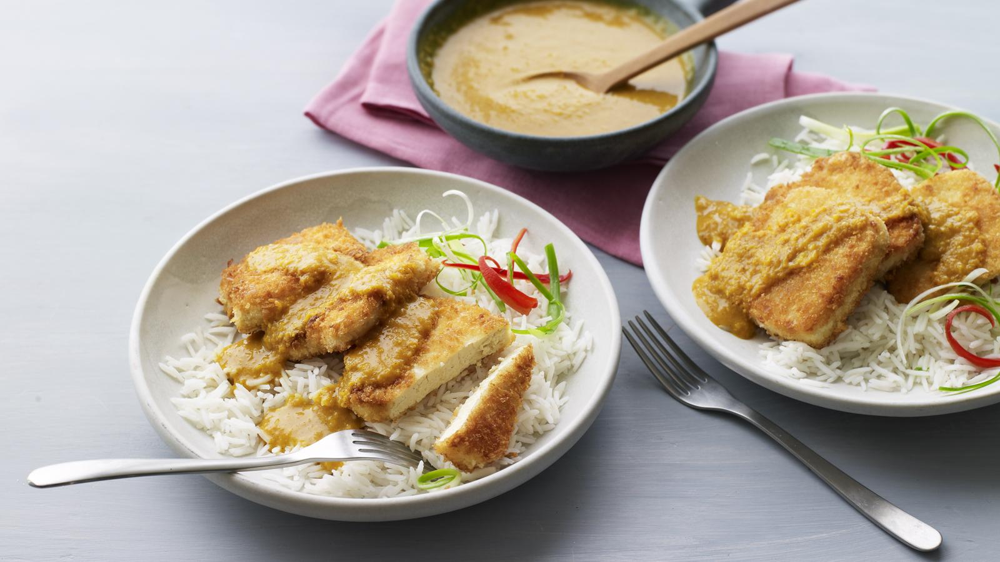

Tofu Katsu Curry

Breaded tofu served on rice with katsu curry sauce.
Make the sauce for this tofu katsu curry recipe ahead of time so that all you have to do before dinner is breadcrumb the tofu and quickly fry it.
It's still healthy enough to eat without regrets. Each serving provides 802 kcal, 23g protein, 45g carbohydrates (of which 10g sugars), 58g fat (of which 10g saturates), 5.5g fibre and 1.7g salt.
Ingridients
For the sauce
- 2 tbsp sunflower oil
- 1 onion, finely chopped
- 2 garlic cloves, sliced
- 15g/½oz fresh root ginger, peeled and finely chopped
- 1 tsp medium curry powder
- ½ tsp ground turmeric
- ½ tsp ground star anise or Chinese five-spice
- 15g/½oz plain flour
- 275ml/9½fl oz vegetable stock (made with ½ cube)
- 2 tsp tomato purée
- 1 tsp soft light brown sugar
- flaked sea salt and freshly ground black pepper
For the tofu
- 280g/10oz extra-firm tofu, well drained
- 2 tbsp cornflour
- 40g/1½oz panko breadcrumbs or dry white breadcrumbs
- 25g/1oz coconut yoghurt
- 6 tbsp sunflower or groundnut oil
To serve
- 1 spring onion, thinly sliced on the diagonal
- 1 tsp thin strips fresh root ginger
- freshly cooked rice
Steps
- To make the sauce, heat the oil in a saucepan and cook the onion for 5 minutes, or until softened and lightly browned. Add the ginger and garlic and fry for a few seconds more.
- Add the curry powder, turmeric and star anise and season with salt and pepper. Cook for 1 minute. Sprinkle over the flour and stir well. Gradually add the stock, stirring constantly.
- Add the tomato purée and sugar and bring to a simmer. Cook for 5 minutes, stirring occasionally. Remove from the heat and blend with a stick blender until smooth. (If you don’t have a stick blender, cool for a few minutes and blend in a food processor.)
- Cut the tofu into six even slices. Spread the cornflour over a small plate and sprinkle the breadcrumbs over another plate. Dust one of the tofu slices lightly in cornflour, then brush with the yoghurt.
- Turn the tofu in the breadcrumbs to coat on all sides, then transfer to a tray lined with baking paper. Repeat the process with the remaining tofu slices.
- Pour the oil into a large frying pan and set over a medium heat. Using a palette knife, gently lower the tofu slices into the hot oil. Cook for 2–3 minutes on each side, or until the breadcrumbs are crisp and golden-brown. You may need to do this in batches. Drain the tofu on kitchen paper.
- Meanwhile, warm the sauce, adding a little extra water if needed. Divide the rice between two shallow bowls or plates and top with the tofu. Pour over a little of the sauce and serve the rest separately.